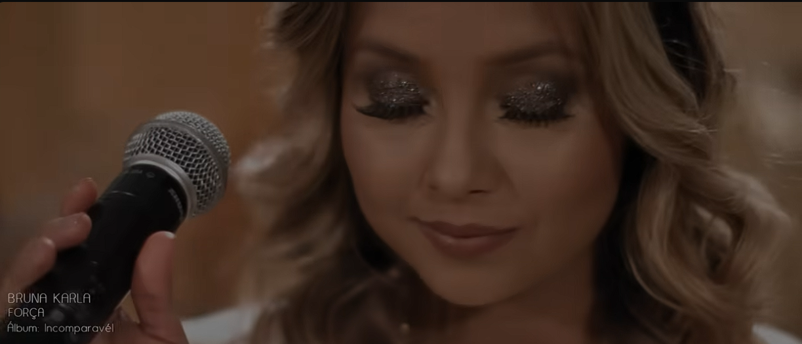
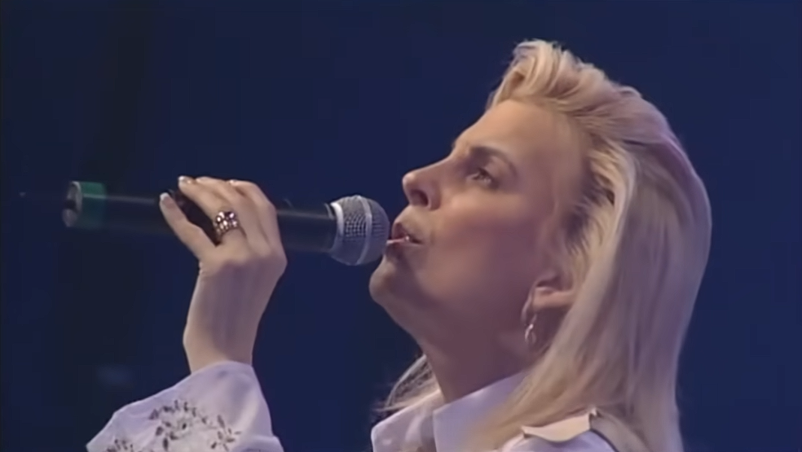
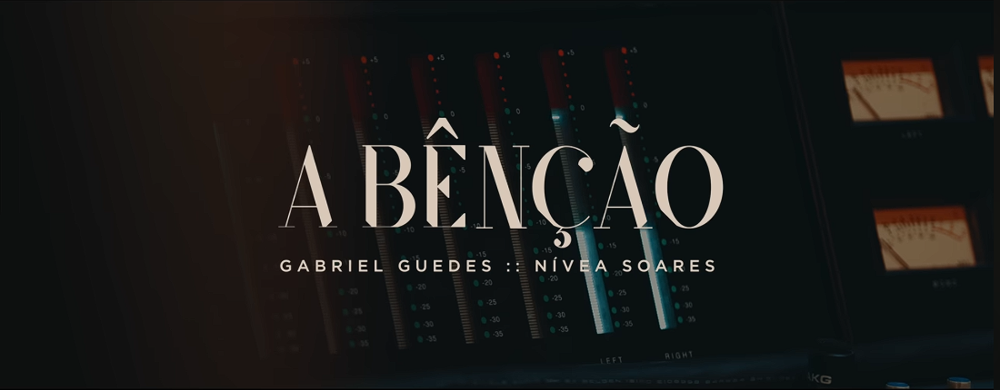
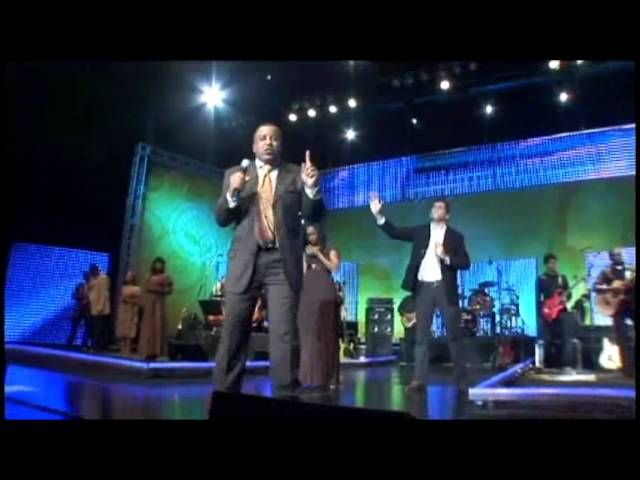

Essa imagem reflete muito o que você vivencia hoje. Alcançando seus objetivos no seu tempo, através do seu esforço e dos seus estudos. Pare e reflita um pouco até onde você chegou com sua força, garra e foco nos seus objetivos.
E eu coloquei o título de "Temos Muito Orgulho de Você" porque eu sei que assim como eu,
a sua mãe, todas as suas amigas e as pessoas que estão ao seu redor veem e percebem o quanto você é
esforçada e merecedora de tudo o que há de bom nesse mundo.
Uma vez me disseram que "o sucesso é o acúmulo de pequenos esforços, repetidos dia e noite"
e você se esforça tanto no seu trabalho, nos seus estudos e na sua responsabilidade com a igreja.
Você já é uma vencedora, minha princesa.
Vou te contar um segredo só nosso: o primeiro Domingo que passamos juntos você me contou algumas coisas que ocorriam no seu trabalho e me explicou a forma que você agia por lá. Nossa, você não faz ideia do quão inteligente é sua forma de falar e eu ficaria por horas te ouvindo ainda mais.
Mas enfim, já te lembrei o quanto você é incrível e esforçada e quando você quiser voltar pra lembrar de tudo isso é só entrar aqui e ler tudo de novo. Agora fique com algumas frases motivacionais, não precisa ler tudo, mas leia com calma e que alguma possa te dar mais força, porque eu sei como é ter uma rotina corrida pra alcançar objetivos pessoais.
Algumas Frases Motivacionais
— Paulo Coelho
— Paulo Coelho
— José de Alencar
— Aristóteles
— Jeremias 29:11
Alguns Louvores pra Você Ouvir

Uma música que fala sobre ser sustentado e vencer.

Nunca Pare de Lutar — Ludmila Ferber
Um clássico motivacional que encoraja a perseverança.

A Bênção — Gabriel Guedes + Nívea Soares
Músicas que trazem mensagens positivas e de esperança.

Deus do Impossível — Toque no Altar
Letras que inspiram crença no poder de Deus para superar obstáculos.
Bom, é algo simples que espero que faça alguma diferença boa no seu dia. 😁